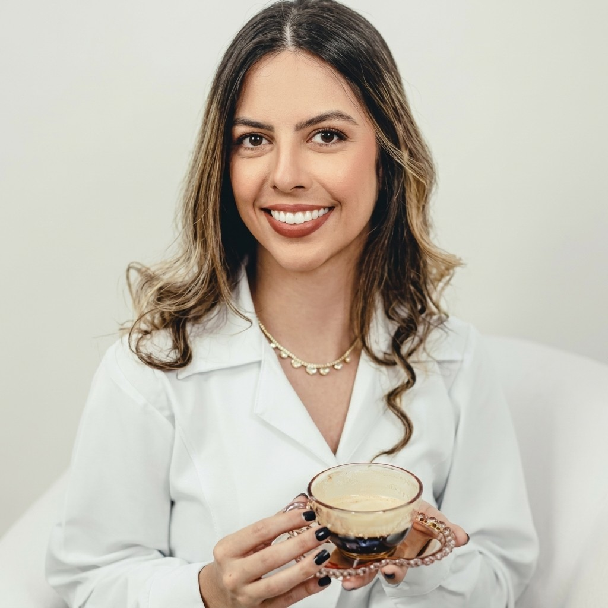

Avaliação
Antes de qualquer procedimento, analisamos os fios, a pele e a estrutura da sua sobrancelha para indicar a técnica mais adequada. Vagas limitadas.
Quero agendar →Arvorezinha · RS
Respeitando a sua melhor versão. Avaliação personalizada para indicar a técnica ideal para o seu rosto.

Minha história
Minha história com a beleza começou aos 11 anos, quando dei meus primeiros passos na área trabalhando como auxiliar de cabeleireira.
Ao longo dos anos, vivi mudanças de cidade, conheci outras áreas e tive diferentes experiências. Até que, em 2021, aos 19 anos, me reencontrei com a beleza e decidi transformar aquilo que sempre fez parte da minha história em profissão.
Iniciei meus estudos em Estética e Cosmética e me especializei em Design de Sobrancelhas. Desde então, não parei mais: foram inúmeros cursos, aperfeiçoamentos, novos serviços e a construção do meu próprio espaço.
Hoje, sou formada em Estética pela UPF, esposa, mãe e proprietária da minha clínica em Arvorezinha/RS, onde me especializei em técnicas voltadas à recuperação e regeneração das sobrancelhas.
Minha trajetória me ensinou que cada rosto e cada sobrancelha tem uma história única. Por isso, meu trabalho é entender cada caso, respeitar a individualidade e buscar um resultado natural, seguro e de excelência. 🍃
“Não faço nenhum procedimento nas minhas clientes que eu não faria em mim. Gosto de saber exatamente a experiência que a cliente terá na minha clínica.”
Por que a Nathalia Moura
Nem toda sobrancelha precisa do mesmo procedimento — cada caso é avaliado individualmente antes de qualquer indicação técnica.
Você sabe exatamente qual será a sua experiência antes de começar, sem surpresas.
O foco é reconstruir com naturalidade, respeitando a estrutura do seu rosto — sem sobrancelha padrão.
Tecnologias regenerativas, como os exossomos, aliadas às técnicas tradicionais para resultados mais duradouros.
Passo a passo
Conversamos sobre suas expectativas e analisamos fios, pele e estrutura da sobrancelha.
Definimos juntas a técnica mais indicada para o seu caso — sem fórmula padrão.
Você recebe orientações de cuidado e retorno para garantir o resultado a longo prazo.
O que oferecemos
Os valores de cada procedimento são combinados individualmente, de acordo com a avaliação. Fale direto com a Nathalia pelo WhatsApp para saber mais.
Antes de qualquer procedimento, analisamos os fios, a pele e a estrutura da sua sobrancelha para indicar a técnica mais adequada. Vagas limitadas.
Quero agendar →Técnica fio a fio para reconstrução e recuperação de sobrancelhas de forma natural e volumosa.
Falar no WhatsApp →Bioestimulação que ativa o folículo para o pelo voltar a crescer naturalmente, mais denso e saudável. Resultados perceptíveis em cerca de 40 dias.
Falar no WhatsApp →Remoção a laser de pigmentação antiga ou indesejada nas sobrancelhas.
Falar no WhatsApp →Quem já passou por aqui
“Fui atendida aí nesse aconchego algumas vezes, super recomendo!”
Cliente Nathalia Moura
“Muito orgulho dessa profissional! Merece todo o sucesso e a agenda lotada que tem.”
Colega de profissão
“Atendimento cuidadoso do início ao fim, resultado super natural.”
Cliente Nathalia Moura

Para profissionais
Pensada para quem quer começar do zero no Design de Sobrancelhas, a formação vai muito além da execução técnica: você aprende toda a base que uma profissional precisa para atender com segurança e confiança.
Venha nos visitar
R. Luís Dorigoni Filho, 700 — Sala 2, Centro
Arvorezinha - RS, CEP 95995-000
Atendimento com horário marcado.
Consulte disponibilidade
pelo WhatsApp.